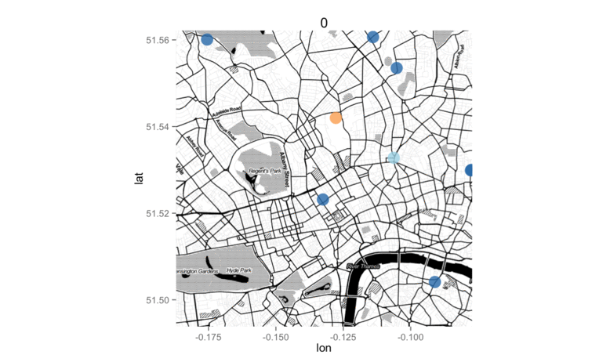
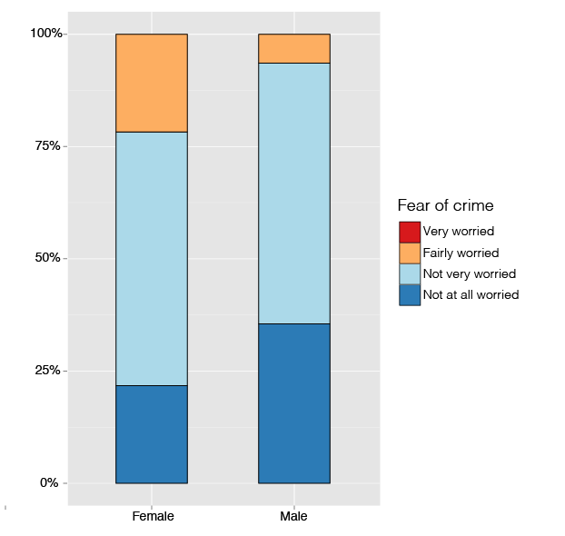

Measuring perceptions of safety and fear of crime in everyday life
Reka Solymosi
r.solymosi.11@ucl.ac.uk
@FOCApp
Who I am
PhD student studying fear of crime as an everyday experience people have as they go about their everyday activities.
Crowd-sourced data available online
Purpose-built mobile app for experience sampling
Founder & chair UCL Crime, Safety & Transport group.
Measuring fear of crime
Traditionally fear of crime is measured with cross-sectional surveys, reflecting general anxieties and attitudes, not experience.
Measuring fear of crime
"[And now, thinking/Thinking] about all types of crime, in general how worried are you about being a victim of crime?
Very worried
Fairly worried
Not very worried
Not at all worried"
- British Crime Survey/ Crime Survey for England and Wales
Measuring fear of crime
Reframing fear of crime
Using the framework of routine activities theory and environmental criminology, fear of crime can be approached as a specific event characterized by spatial, temporal, and personal variables.
By studying the fear of crime in the environment where it occurs, and focusing on a microscale geography with the additional dimension of time, new insight into fear of crime can be attained.
This new insight can lead to the development of situational interventions which target fear of crime hot spots as they move about in place and time, allowing limited resources to be allocated more efficiently to enhance perceptions of safety.
Reframing fear of crime

Fear experiences over time
Fear experiences over time - pilot
Fear experiences over time - full study
Fear experiences in place

Fear experiences in time and place

Fear experiences in time and place
Personal variables and fear
Traditionally present gender difference in fear
Personal variables and fear
Not so much in longitudinal experience
Lessons
Fear of crime as everyday experience is not the same as overall attitudes it varies with context.
Static approach to fear of crime: not reflective of experience - scary places? scary times? scared people?
Without real incentive, it is tough to get participants.
Even if we get many participants, sample will be subject to many types of bias.
So what?
Can we map all fear of crime? - No.
Better approach is to think carefully about what to record.
So what?
Set up a collaboration with stakeholders interested in the data, who could use it to make a difference - also provides incentive...!
Bus route and fear
Fear of crime deters active travel.
Since people always on the move, difficult to pinpoint 'problem areas'.
Almost impossible to cover whole-journey-environment with traditional surveys.
Difficult to cover late-night time periods, when people are most likely to see something that scares them.
Bus route and fear
[ Modify app to meet specific need ]
Bus route and fear

Bus route and fear

Bus route and fear

Bus route and fear
[ Pilot testing with RPIs ]
Bus route and fear
Bus route and fear
Bus route and fear

Quals
Feedback from RPIs:
"It's different for us than passengers"
"It does vary, some times are worse than others"
"We always work in partners"
"You'd feel less safe at the bus stop than on board the bus"
Next steps
How to improve uptake & participation.
Further opportunities for more detailed analysis: identify spatiotemporal hotspots.
Crime prevention through environmental design (CPTED) approaches to target hotspots.
Questions?
For more info see:
Solymosi, R., Bowers, K. and Fujiyama, T. (2015), Mapping fear of crime as a context-dependent everyday experience that varies in space and time. Legal and Criminological Psychology. doi: 10.1111/lcrp.12076
Solymosi, R. (2014). Mapping fear of crime dynamically on everyday transport. JDiBrief Series. London: UCL Jill Dando Institute of Security and Crime Science. ISSN: 2050-4853. Available from www.jdibrief.com